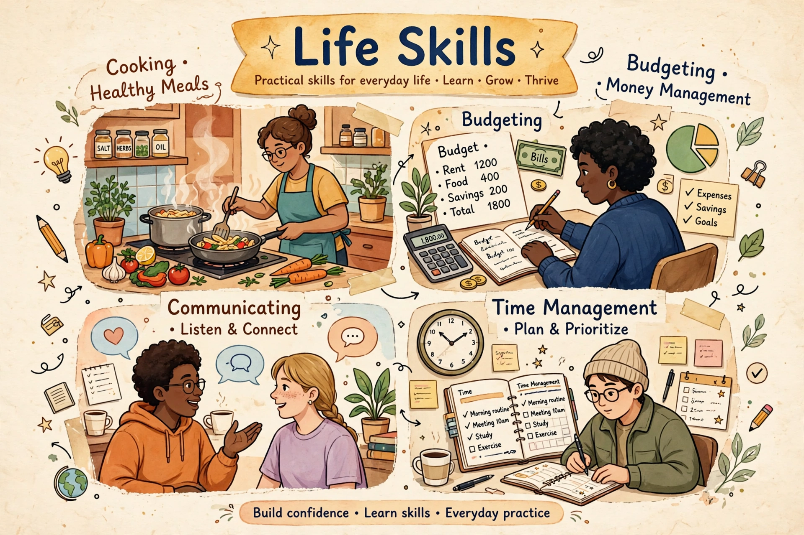

Life skills are abilities for adaptive and positive behaviour that enable humans to deal effectively with the demands and challenges of life.
Life skills are a set of psychosocial and interpersonal skills that help people make informed decisions, communicate effectively, and cope with managing themselves and their environment. The concept is promoted by organisations including the UNICEF, World Health Organization, and UNESCO in education and public health programmes.
The WHO identified ten core life skills: self-awareness, empathy, critical thinking, creative thinking, decision-making, problem-solving, effective communication, interpersonal relationships, coping with stress, and coping with emotions. These are often taught together because they reinforce one another.
Life skills are commonly grouped into thinking skills, social skills, and emotional skills. Practical domestic skills — cooking, budgeting, home maintenance, first aid, and digital literacy — are also frequently included under the broader term, especially in adult education and independent-living programmes.
Life-skills education is part of curricula in many countries, linked to social and emotional learning, health education, and prevention of risky behaviour among adolescents. Programmes aim to build resilience and employability as well as academic achievement.